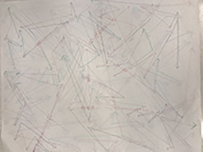
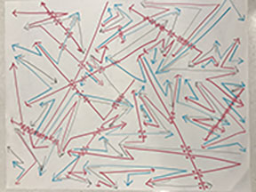

Assignment 1
For our first assignment, I teamed up with Jiwoo and Yeasun as a group.
At first, we came up with an idea of using arrows. The rules at the first round were :
- With each color assigned, draw arrows in clock wise.
- Draw arrow starting from the corner of arrow that was drawn previously, and it should be bent once.
- Only red could intersect with other lines
- When the red intersects, should draw dots around.
- When the colors of blue and green run out of the space, including red, it stops.

With these rules, we struggled remembering what arrow was drawn right before.
So the order got messed up and was very confused to draw arrow following the rule.
Also, the pen we used were very thin so it was not much visible.
Followings are the second exercise rules:
- Regardless of knowing that latest arrow drawn, draw arrows from the colors stated; Red from [Black/ Black from Blue/ Blue from Red]
- The arrow should only be bent once
- Only Red could intersect the other lines
- When the red intersects, should draw dots around the intersection.
- When the colors of Blue and Black run out of the space to draw, it ends
